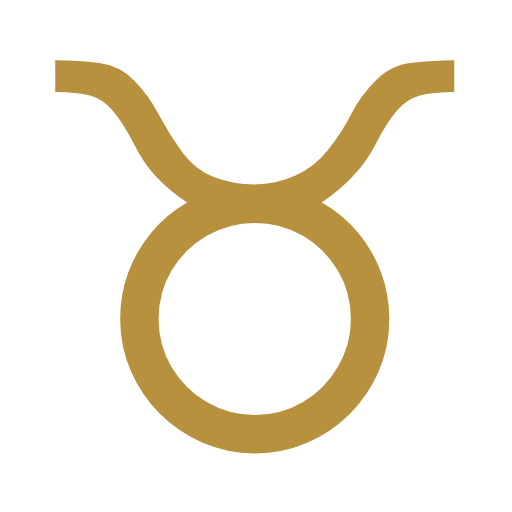

Astrology Grimoire
 Taurus
Taurus
True to Your Sign?
Taurus (April 20 to May 20)
The second sign of the zodiac, Taurus is an earth sign ruled by  Venus. Its symbol is the bull. Taureans are typically reliable, loyal, and patient, with a discriminating taste for quality and the good things in life. Determined captures the heart of the Taurus temperament. They like to expand their knowledge so they can put their intelligence and practicality to good use. The shadow side shows in laziness, materialism, and moodiness.
Venus. Its symbol is the bull. Taureans are typically reliable, loyal, and patient, with a discriminating taste for quality and the good things in life. Determined captures the heart of the Taurus temperament. They like to expand their knowledge so they can put their intelligence and practicality to good use. The shadow side shows in laziness, materialism, and moodiness.
Attributes
Stable, stubborn, productive, practical.
| Placement | Expression |
|---|---|
| Determination and grounded. | |
| Stolid and hard working. | |
| Practical with strong business skills. | |
| Purposeful with strong professionalism. | |
| Artistic and seeks financial security. | |
| Conventional and practical. | |
| Materialistic and disciplined. | |
| Manifesting and discernible. | |
| Renovator but may feel suppressed. | |
| Reluctant and hesitant. |
House Placements
| House | Expression |
|---|---|
| 1st House: Physical, Personality | Gather and hold personal power and possessions. |
| 2nd House: Money, Possessions | Indulgence, orderly. |
| 3rd House: Communications, Thoughts | Sophistication, artistic/athletic strength. |
| 4th House: Home, Domestic Life | Consistent, tranquil. |
| 5th House: Love, Fun, Children | Considerate, attentive. |
| 6th House: Work, Health | Productive, routine. |
| 7th House: Marriage, Partners | Reliable, sensual. |
| 8th House: Death, Inheritances | Unselfish, resolute. |
| 9th House: Religion, Education, Travel | Tasteful, immanent. |
| 10th House: Public Status, Honors | Stimulating, recognition. |
| 11th House: Friends, Wishes, Government, Career Rewards | Pragmatic, steady. |
| 12th House: Secrets, Psychic, Spiritism, Institutions, Private | Disallowing, renouncing. |
Moon in Taurus
For lunar transit details, natal Moon information, and Taurus Moon magick, see Moon in Taurus.
Birthstones
Traditionally, birthstones are crystals associated with zodiac signs based on ancient correspondences. However, modern jewelry store lists vary wildly and often bear little resemblance to historical traditions. Rather than following inconsistent commercial lists, you'll achieve more powerful results by choosing stones that match your sign's elemental color.
Taurus color: Green
Green stones align with Taurus' earthy, abundant, sensual energy. Choose from Emerald for love and prosperity, or Malachite for transformation and grounding wealth.
The Bull
Coming second in the parade of zodiacal creatures, Taurus is the bull, a figure that has shifted remarkably little across the millennia. In some depictions he gazes back toward Aries, in others ahead to the signs still to come. Stargazers of Persia, Greece, India, and Babylonia alike saw a bull in this constellation. Its brightest star, Aldebaran, was named the heart of the bull, and the Persians spoke of the whole figure as the Bull of Light. Taurus rises in the stretch between the vernal equinox and the summer solstice, a season that calls for steady labor, focus, and consolidation, so that the raw seed of energy sown under Aries can be put to purposeful use.
Correspondences
| Attribute | Taurus |
|---|---|
| Polarity | Negative, feminine |
| Quality | Fixed |
| Ruling planet | |
| Element | Earth |
| Body parts | Throat and neck |
| Color | Pink |
| Gemstone | Sapphire or emerald |
| Metal | Copper |
| Flowers | Rose, poppy, foxglove |
| Trees | Ash, apple, cypress, vines |
| Herbs and spices | Cloves, sorrel, spearmint |
| Food | Wheat, berries, apples, grapes |
| Animals | Cattle |
| Countries | Ireland, Switzerland, Iran |
| Cities | Dublin, Lucerne, Mantua, Leipzig |
The Glyph
The glyph of Taurus pictures the head and horns of the bull. Where the horns of Aries speak of the ram's brute force, those of Taurus suggest the bull as a beast of burden and even hint at the shape of a yoke. The sign is ruled by Venus and by the element of earth, and the bull works that earth as he draws his furrows. For all that he embodies masculine power, the bull is tied to feminine energies and carries the qualities of the earth mother. Because Taurus governs the throat, it is bound up with sound and music, and the glyph is also read as the larynx seated in the throat, with the eustachian tubes branching away from it.
Qualities
Those born under Taurus are granted the archetypal traits of the bull: a vast capacity for hard work, resilience and stubbornness, and a steady reliability that loves home and stability. To this is added a keen sensitivity to the sights, sounds, and scents of the material world, and with it a deep delight in sensual pleasure. Its rule over neck and throat points to a love of music and of the spoken word, and when joined to the other senses it sharpens a feeling for beauty. The bull's earthy nature shows in a hearty appetite for all of life's pleasures and makes for a temperament that is warm-hearted, generous, and full of energy.